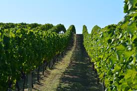

Allgemein:
Seit 2007 steckt Griechenland in einer großen Finanzkrise, wo bei dadurch eine steigende Arbeitslosigkeit und weniger verfügbares Einkommen hervorgeht.
Landwirtschaft:
Die Landwirtschaft verliert in Griechenland immer mehr an Bedeutung, da der Tourismus mehr Geld einbringt.
Jedoch spielt der Fischfang und die Fischzucht in Griechenland immer noch eine besondere Rolle.
Weitere wichtige Erzeugnisse sind: Weintrauben, Oliven, Tabak, Baumwolle und Tomaten.

Dienstleistungssektor:
Tourismus
Handel
Schiffsverkehr
Finanzdienstleistungen
Industrie:
Die Industrie in Griechenland erfährt ein stetiges Wachtstum und wird dabei gerade durch kleine- und mittelständige Unternehmen geprägt.
Traditionelle Produkte sind außerdem zum Beispiel:
Textilproduktion
Mineralien
und zunehmend auch Technologie- und Telekommunikationsproduktion
Stromversorgung:
Bis jetzt: Erdöl, Kohle und Gas von externen Ländern
Zukünftig: (bereits 2012 um 150% gestiegen), Windenergie und Wasserenergie (weiter im Vormarsch)